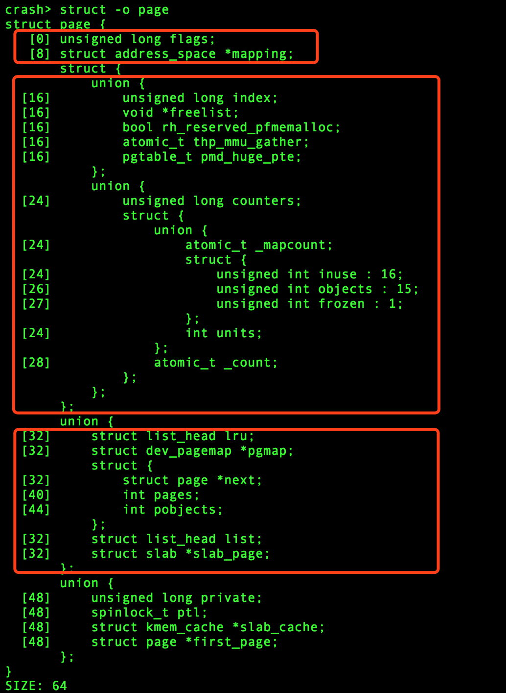
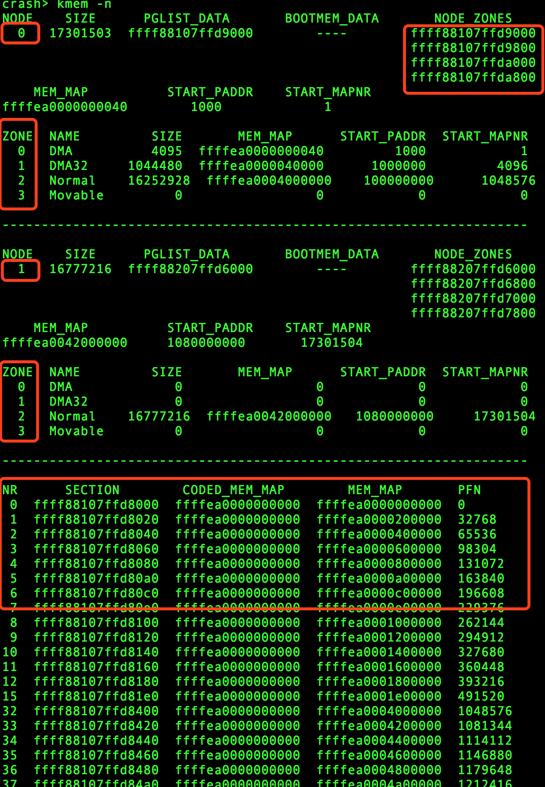

内存管理基本上是以数据结构struct page展开的，本文将详细围绕struct page展开。
struct page结构体
Linux内核内存管理的实现是以struct page为核心，实际上每个物理页面都需要一个struct page数据结构来描述，因此为了降低成本，该结构中大量使用了C语言的联合体Union来优化其大小。

我们可以看出，一个struct page结构体大小为64字节，而一般情况下系统的页大小为4096字节（4k）。所以，一个系统上如果有4GB的内存，struct page结构体就需要64MB的内存，占比大约1.5%。
flags标志成员
flags成员是页面标志位的集合，标志位是内存管理非常重要的部分，目前系统上主要有如下标志位：
1
2
3
4
5
6
7
8
9
10
11
12
13
14
15
16
17
18
19
20
21
22
23
24
25
26
27
28
29
30
31
32
33
34
35
36
37
38
39
40
41
42
43
44
45
46
47
48
49
50
51
52
53
54
55
56
|
enum pageflags {
PG_locked, /* Page is locked. Don't touch. */
PG_error,
PG_referenced,
PG_uptodate,
PG_dirty,
PG_lru,
PG_active,
PG_slab,
PG_owner_priv_1, /* Owner use. If pagecache, fs may use*/
PG_arch_1,
PG_reserved,
PG_private, /* If pagecache, has fs-private data */
PG_private_2, /* If pagecache, has fs aux data */
PG_writeback, /* Page is under writeback */
#ifdef CONFIG_PAGEFLAGS_EXTENDED
PG_head, /* A head page */
PG_tail, /* A tail page */
#else
PG_compound, /* A compound page */
#endif
PG_swapcache, /* Swap page: swp_entry_t in private */
PG_mappedtodisk, /* Has blocks allocated on-disk */
PG_reclaim, /* To be reclaimed asap */
PG_swapbacked, /* Page is backed by RAM/swap */
PG_unevictable, /* Page is "unevictable" */
#ifdef CONFIG_MMU
PG_mlocked, /* Page is vma mlocked */
#endif
#ifdef CONFIG_ARCH_USES_PG_UNCACHED
PG_uncached, /* Page has been mapped as uncached */
#endif
#ifdef CONFIG_MEMORY_FAILURE
PG_hwpoison, /* hardware poisoned page. Don't touch */
#endif
#ifdef CONFIG_TRANSPARENT_HUGEPAGE
PG_compound_lock,
#endif
__NR_PAGEFLAGS,
/* Filesystems */
PG_checked = PG_owner_priv_1,
/* Two page bits are conscripted by FS-Cache to maintain local caching
* state. These bits are set on pages belonging to the netfs's inodes
* when those inodes are being locally cached.
*/
PG_fscache = PG_private_2, /* page backed by cache */
/* XEN */
PG_pinned = PG_owner_priv_1,
PG_savepinned = PG_dirty,
/* SLOB */
PG_slob_free = PG_private,
};
|
在实际的x86-64系统上，有如下flags:
1
2
3
4
5
6
7
8
9
10
11
12
13
14
15
16
17
18
19
20
21
22
23
24
25
26
27
28
29
30
31
32
|
crash> kmem -g
PAGE-FLAG BIT VALUE
PG_locked 0 0000001
PG_error 1 0000002
PG_referenced 2 0000004
PG_uptodate 3 0000008
PG_dirty 4 0000010
PG_lru 5 0000020
PG_active 6 0000040
PG_slab 7 0000080
PG_owner_priv_1 8 0000100
PG_arch_1 9 0000200
PG_reserved 10 0000400
PG_private 11 0000800
PG_private_2 12 0001000
PG_writeback 13 0002000
PG_head 14 0004000
PG_tail 15 0008000
PG_swapcache 16 0010000
PG_mappedtodisk 17 0020000
PG_reclaim 18 0040000
PG_swapbacked 19 0080000
PG_unevictable 20 0100000
PG_mlocked 21 0200000
PG_uncached 22 0400000
PG_hwpoison 23 0800000
PG_compound_lock 24 1000000
PG_checked 8 0000100
PG_fscache 12 0001000
PG_pinned 8 0000100
PG_savepinned 4 0000010
PG_slob_free 11 0000800
|
内核定义了一些标准宏，用于检查页面是否设置了某个特定的标志位或者用于设置、清除某个标志位，这些宏的名称有一定的模式，具体如下：
PageXXX()用于检查页面是否设置了PG_XXX标志位；SetPageXXX()设置页面的PG_XXX标志位；ClearPageXXX()用于无条件的清除PG_XXX标志位。
1
2
3
4
5
6
7
8
9
10
11
|
#define TESTPAGEFLAG(uname, lname) \
static inline int Page##uname(const struct page *page) \
{ return test_bit(PG_##lname, &page->flags); }
#define SETPAGEFLAG(uname, lname) \
static inline void SetPage##uname(struct page *page) \
{ set_bit(PG_##lname, &page->flags); }
#define CLEARPAGEFLAG(uname, lname) \
static inline void ClearPage##uname(struct page *page) \
{ clear_bit(PG_##lname, &page->flags); }
|
flags成员除了存放以上重要的标志位以外，还有另外一个很重要的作用，就是存放section编号、node结点编号、zone结点编号和LAST_CPUPID等。具体存放内容与内核配置有关。
如下图所示，在x86-64平台上，centos7内核配置中，flags的布局示意图，其中：

0-24位用于存放页面标志位；25-29位保留；30-51位用于存放last_cpupid；52-53位用于存放zone id；54-63位用于存放node id。
mapping成员
struct page中，mapping成员表示页面所指向的地址空间。内核中的地址空间通常有两个不通的地址空间，一个用于文件映射页面，例如在读取文件时，地址空间用于将文件内容数据与装载数据的存储介质区关联起来。另一个用于匿名映射。内核使用了一个简单直接的方式实现了『一个指针，两种用途』，mapping指针地址的最后两位用于判断是否指匿名映射或KSM页面的地址空间，如果是匿名页面，那么mapping指向匿名页面的地址空间数据结构struct anon_vma。
1
2
3
4
5
6
7
8
|
#define PAGE_MAPPING_ANON 1
#define PAGE_MAPPING_KSM 2
#define PAGE_MAPPING_FLAGS (PAGE_MAPPING_ANON | PAGE_MAPPING_KSM)
static inline int PageAnon(struct page *page)
{
return ((unsigned long)page->mapping & PAGE_MAPPING_ANON) != 0;
}
|
_count和_mapcount成员
_count和_mapcount成员是struct page结构中的两个非常重要的引用计数，并且都是atomic_t类型的变量。
其中，_count表示内核中引用该页面的次数：
_count的值为0时，表示该页面为空闲或者即将要被释放的页面；_count的值大于0时，表示该页面已经被分配且内核正在使用，暂时不会释放。
内核中常用的加减_count引用计数的API为：get_page 和 put_page，此外，内核中还有一对常用的变种宏：
1
2
|
#define page_cache_get(page) get_page(page)
#define page_cache_release(page) put_page(page)
|
其中，_mapcount表示这个页面被进程映射的个数，即已经映射了多少个用于pte页表：
_mapcount == -1表示没有pte映射到页面；_mapcount == 0表示只有父进程映射了页面；_mapcount > 0表示除了父进程外还有其他进程映射了这个页面。
页面锁PG_locked
还记得前面提到的标志位中有一个叫做PG_locked，内核常用这个标志位来设置一个页面锁。
lock_page()函数用于申请页面锁，如果页面锁被其它进程占用了，就会睡眠等待；trylock_page()函数用于去尝试申请页面锁，如果PG_locked 已经置位了，该函数返回false，说明有其他进程已经锁住了该页面，返回true表示获取页面锁成功。
1
2
3
4
5
6
7
8
9
10
11
12
13
14
15
16
17
18
19
20
21
22
23
24
25
26
27
28
29
|
/**
* __lock_page - get a lock on the page, assuming we need to sleep to get it
* @page: the page to lock
*/
void __lock_page(struct page *page)
{
DEFINE_WAIT_BIT(wait, &page->flags, PG_locked);
__wait_on_bit_lock(page_waitqueue(page), &wait, bit_wait_io,
TASK_UNINTERRUPTIBLE);
}
EXPORT_SYMBOL(__lock_page);
/*
* lock_page may only be called if we have the page's inode pinned.
*/
static inline void lock_page(struct page *page)
{
might_sleep();
if (!trylock_page(page))
__lock_page(page);
}
static inline int trylock_page(struct page *page)
{
return (likely(!test_and_set_bit_lock(PG_locked, &page->flags)));
}
|
unlock_page()函数用于释放页面锁，并唤醒等待页面锁的进程。
1
2
3
4
5
6
7
8
9
10
11
12
13
14
15
16
17
18
19
20
21
|
/**
* unlock_page - unlock a locked page
* @page: the page
*
* Unlocks the page and wakes up sleepers in ___wait_on_page_locked().
* Also wakes sleepers in wait_on_page_writeback() because the wakeup
* mechananism between PageLocked pages and PageWriteback pages is shared.
* But that's OK - sleepers in wait_on_page_writeback() just go back to sleep.
*
* The mb is necessary to enforce ordering between the clear_bit and the read
* of the waitqueue (to avoid SMP races with a parallel wait_on_page_locked()).
*/
void unlock_page(struct page *page)
{
VM_BUG_ON_PAGE(!PageLocked(page), page);
clear_bit_unlock(PG_locked, &page->flags);
smp_mb__after_clear_bit();
wake_up_page(page, PG_locked);
}
EXPORT_SYMBOL(unlock_page);
|
struct page数组
我们知道内核里每一个物理页面都有一个struct page结构体描述，这些struct page数组存放到哪里呢？
下面我们分析x86-64情况下，struct page数组的情况，现在的服务器使用的都是NUMA架构，一般有两个numa node，centos7的内核内存模型为Sparse Memory Model，所以，内存被划分为很多个mem_section，每个mem_section的大小为128MB。

如上图所示，通过crash命令kmem -n我们可以看到，该服务器有两个NUMA NODE, node0 包含三个zone（DMA,DMA32,Normal），node1包含1个zone（Normal）。同时也展示了mem_section的情况。
struct mem_section的定义如下：
1
2
3
4
5
6
7
8
|
crash> struct -o mem_section
struct mem_section {
[0] unsigned long section_mem_map;
[8] unsigned long *pageblock_flags;
[16] struct page_cgroup *page_cgroup;
[24] unsigned long pad;
}
SIZE: 32
|
其中section_mem_map成员指向了struct page数组。我们看一下mem_section[0][0]这个mem_section的section_mem_map的值：
1
2
3
4
5
6
7
|
crash> p -x mem_section[0][0]
$6 = {
section_mem_map = 0xffffea0000000003,
pageblock_flags = 0xffff88107ffd0040,
page_cgroup = 0xffff88017fc80000,
pad = 0x0
}
|
说明0xffffea0000000000为第一个struct page数据结构的地址，地址的低两位用作其它用途。
通过crash命令kmem -p我们可以验证一下上面的分析是否正确：
1
2
3
4
5
6
7
8
9
10
11
12
13
14
15
|
crash> kmem -p
PAGE PHYSICAL MAPPING INDEX CNT FLAGS
ffffea0000000000 0 0 0 0 400 reserved
ffffea0000000040 1000 0 0 1 fffff00000400 reserved
ffffea0000000080 2000 0 0 1 fffff00000400 reserved
ffffea00000000c0 3000 0 0 1 fffff00000400 reserved
ffffea0000000100 4000 0 0 1 fffff00000400 reserved
ffffea0000000140 5000 0 0 1 fffff00000400 reserved
ffffea0000000180 6000 0 0 1 fffff00000400 reserved
ffffea00000001c0 7000 0 0 1 fffff00000400 reserved
ffffea0000000200 8000 0 0 1 fffff00000400 reserved
ffffea0000000240 9000 0 0 1 fffff00000400 reserved
ffffea0000000280 a000 0 0 1 fffff00000400 reserved
ffffea00000002c0 b000 0 0 1 fffff00000400 reserved
ffffea0000000300 c000 0 0 1 fffff00000400 reserved
|
可以看出，第一个页面的地址为：ffffea0000000000。
此外，我们通过crash命令kmem -p有如下片段：
1
2
3
|
ffffea00000846c0 211b000 0 1 0 1fffff00000000
ffffea0000084700 211c000 0 ffff88000211c600 1 1fffff00004080 slab,head
ffffea0000084740 211d000 0 1 0 1fffff00008000 tail
|
ffffea0000084700 描述的页面的flags为：slab,head，我们可以进行验证一下：
1
2
3
4
5
6
7
|
crash> page.flags -x ffffea0000084700
flags = 0x1fffff00004080
crash> kmem -g 0x1fffff00004080
FLAGS: 1fffff00004080
PAGE-FLAG BIT VALUE
PG_slab 7 0000080
PG_head 14 0004000
|
Author
laoqinren
LastMod
2018-12-30
Markdown
The Markdown version »